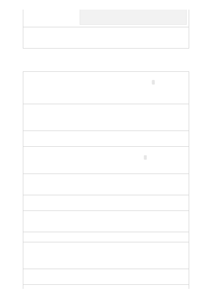

The OpenAIKeyCredential class represents an OpenAI API key
and is used to authenticate into an OpenAI client for an OpenAI
endpoint.
The representation of a single prompt completion as part of an
overall chat completions request. Generally, n choices are
generated per provided prompt with a default value of 1. Token
limits and other settings may limit the number of choices
generated.
Representation of the response data from a chat completions
request. Completions support a wide variety of tasks and
generate text that continues from or "completes" provided
prompt data.
A single, role-attributed message within a chat completion
interaction.
The representation of a single prompt completion as part of an
overall completions request. Generally, n choices are generated
per provided prompt with a default value of 1. Token limits and
other settings may limit the number of choices generated.
Representation of the response data from a completions request.
Completions support a wide variety of tasks and generate text
that continues from or "completes" provided prompt data.
Representation of a log probabilities model for a completions
generation.
Representation of the token counts processed for a completions
request. Counts consider all tokens across prompts, choices,
choice alternates, best_of generations, and other consumers.
Representation of a single embeddings relatedness comparison.
Representation of the response data from an embeddings
request. Embeddings measure the relatedness of text strings and
are commonly used for search, clustering, recommendations,
and other similar scenarios.
Measurement of the amount of tokens used in this request and
response.
const client = new OpenAIClient(endpoint,
credential);
Interfaces